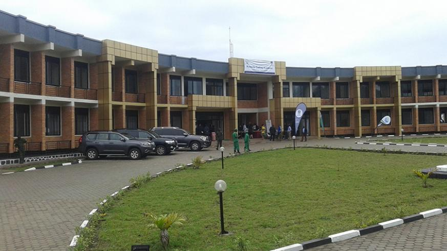
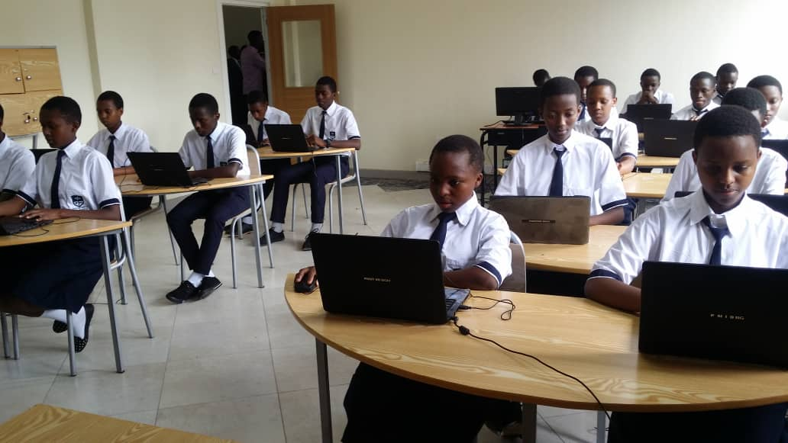

WHY WE ARE DIFFERENT

' Rwanda Coding Academy (RCA) is a special model school
incepted by the Government of Rwanda.
It is hybrid of both general education and TVET.
It teaches Software Development, Embedded Systems Programming, and Cyber-Security.
Rwanda Coding Academy is located in Nyabihu District, Western province.
It was established on Jan. 28th, 2019 by the Gov’t of Rwanda.
and was put under management of Rwanda Polytechnic (RP).'
School location
' Rwanda Coding Academy opened its doors for
the first time earlier this month starting with 60 students in total
including 30 girls and 30 boys, who were among the top performers
in Science, Technology, Engineering and Mathematics (STEM) subjects in
last year’s O’ Level National Exams,” reads a statement from the educa
tion ministry.'
School building

' To applicate there you need to fill the application form either online or fill the form at the school. The form requires Your National Examination code, Your names, your headteachers information like Names, Phone number and Email. Also you need to provide your informtions like age, gender and name of the curent school. Make sure you gve true phone numbers and email because RCA staff use them to call you after the release of Results.'
to be a young coder